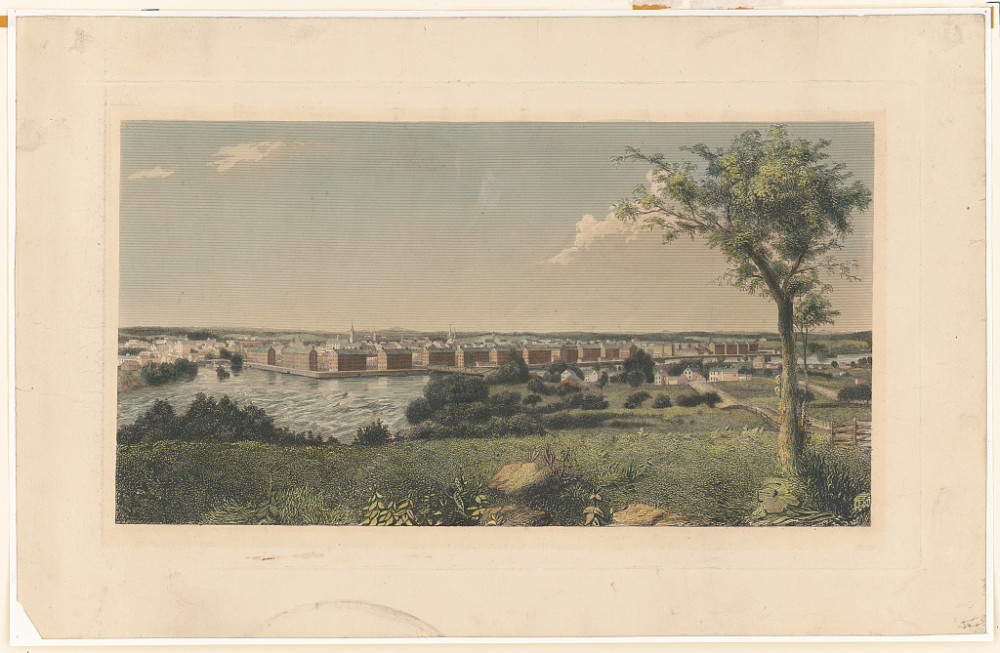
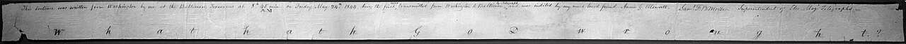
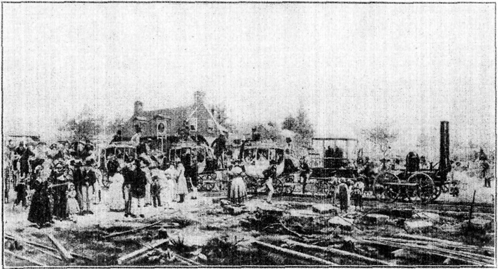

Directions: Work through the five stations in order. Each station holds one record of the market revolution at work: a mill woman's defense of factory life, the first telegraph message, a railroad record, the corporation's rules, and a turn out. For each record, state what it shows about how Americans' work and news changed. You will build the full file in Part 2 and judge the change from it.
Source: Probably Harriet Jane Farley, writing as "A Factory Girl," in the Lowell Offering, December 1840. Text quoted verbatim from the audited TPSP record lowell-mill-girls-1840; the edition named in that record is the Gilder Lehrman Institute. Cuts are marked with ellipses, as the record carries them. This station is also the lesson's Lowell Offering piece: the magazine was written and edited by the mill women themselves.

"Whom has Mr. Brownson slandered? . . . girls who generally come from quiet country homes, where their minds and manners have been formed under the eyes of the worthy sons of the Pilgrims, and their virtuous partners, and who return again to become the wives of the free intelligent yeomanry of New England and the mothers of quite a proportion of our future republicans. Think, for a moment, how many of the next generation are to spring from mothers doomed to infamy!"
"We are under restraints, but they are voluntarily assumed; and we are at liberty to withdraw from them, whenever they become galling or irksome. Neither have I ever discovered that any restraints were imposed upon us but those which were necessary for the peace and comfort of the whole, and for the promotion of the design for which we are collected, namely, to get money, as much of it and as fast as we can; and it is because our toil is so unremitting, that the wages of factory girls are higher than those of females engaged in most other occupations. It is these wages which, in spite of toil, restraint, discomfort, and prejudice, have drawn so many worthy, virtuous, intelligent, and well-educated girls to Lowell, and other factories; and it is the wages which are in great degree to decide the characters of the factory girls as a class."
"Mr. Brownson may rail as much as he pleases against the real injustice of capitalists against operatives, and we will bid him God speed, if he will but keep truth and common sense upon his side. Still, the avails of factory labor are now greater than those of many domestics, seamstresses, and school-teachers; and strange would it be, if in money-loving New England, one of the most lucrative female employments should be rejected because it is toilsome, or because some people are prejudiced against it. Yankee girls have too much independence for that."
File entries. The writer answers Orestes Brownson, who had called factory work a disgrace to the women who did it. State the three grounds of her defense, in her order: where the women come from and return to, how the restraints were assumed, and what drew so many of them to Lowell. Quote the words she uses for the liberty to leave.
She concedes one point to Brownson before she answers him. State what she bids him "God speed" to attack, and explain what that concession does for her defense. Then state what this record, written to defend the mills, cannot show about mill work.
Source: Samuel F. B. Morse, first telegraphic message, sent from the Capitol in Washington to Baltimore, May 24, 1844. Text quoted verbatim and whole from the audited TPSP record morse-first-telegraph-message-1844; the edition named in that record is the Library of Congress, which holds the original paper tape. The phrase was suggested by Annie Ellsworth and is drawn from the Bible, Numbers 23:23.

"What hath God wrought."
File entries. The whole message is four words, and none of them describes the invention. State whose work the message credits, and explain why a demonstration built with Congress's money, meant to prove that instant communication worked, might open by crediting God rather than Morse.
The message's news was itself. Explain what the forty miles between Washington and Baltimore proved on May 24, 1844, and name two kinds of work, from the reading, that the wire changed within the following years.
Source: The account below is a teaching summary written for this lesson from the public record; it is not a period text. It states the first runs, the charters, and the mileage as the standard railroad histories and the Smithsonian's collection records give them.

The Baltimore and Ohio Railroad, chartered in 1827, was the first American railroad built as a common carrier of freight and passengers. Peter Cooper's small locomotive Tom Thumb hauled B&O directors in 1830 to show that steam could work the road's curves. In August 1831 the DeWitt Clinton, built for the Mohawk and Hudson Railroad, hauled the first passenger train in New York State between Albany and Schenectady, with cars that were stagecoach bodies set on rails and passengers who arrived, by the cheerful accounts, singed by sparks from the engine. The mileage then ran ahead of every prediction. The United States counted about twenty three miles of track in 1830, some twenty eight hundred miles in 1840, and more than nine thousand miles in 1850, more track than any other nation on earth. The roads ran in winter, when the canals froze shut, and they climbed country no canal could cross.
File entries. State what the Tom Thumb run of 1830 and the DeWitt Clinton run of 1831 each had to prove, and to whom. Why did a railroad need a demonstration at all in 1830?
The source line calls this record a summary. State the three mileage figures it gives, and explain what the summary form lets this station do that a single period quotation could not, and what it cannot be quoted for.
Source: The account below is a teaching summary written for this lesson from the public record of the Lowell corporations' printed regulations and boardinghouse rules; it is not a period text, and it quotes nothing. The rules described are the ones the mills posted and the boardinghouse keepers enforced through the 1830s and 1840s.
The corporations that built Lowell regulated far more than the work. In the mills, bells ordered the day. A first bell woke the boardinghouses, a bell called the operatives to the mill, bells set the meal hours, and an evening bell closed the day, with the working day running twelve hours and more in the long months. In the boardinghouses, company keepers housed the women under printed rules. The doors were kept to a ten o'clock curfew. Spirits were forbidden. Church attendance was expected and in the early years required by the terms of employment. A woman who broke the rules of the house, or whose conduct the keeper reported, could lose her place in the mill as well as her room, because the corporation treated the boardinghouse and the factory as one system. The companies stated the purpose openly: parents would send daughters to Lowell, and keep them there, only if the mills could promise that factory work would not cost a young woman her good name.
File entries. State the two places the system governed, the mill and the boardinghouse, and name one rule in each that reached past the work itself. Then state the corporations' own reason for governing both, in the summary's terms.
Set this station beside Station 1. Farley writes that the restraints were "voluntarily assumed" and that the women were free to withdraw. Using one rule from this station, explain what withdrawing actually cost a woman who left, and judge whether her word voluntarily covers it.
Source: The account below is a teaching summary written for this lesson from the public record of the Lowell turn outs; it is not a period text, and it quotes nothing. The numbers are the usual counts given in the standard histories of the Lowell mills.
Twice in the 1830s the women of Lowell stopped the mills. In February 1834 one of the corporations announced a cut in wages, and about eight hundred women turned out, as a strike was then called. They marched from mill yard to mill yard calling the other women out, formed a procession, and held their organization together for days before the cut and the loss of pay broke the strike, and its leaders were dismissed and found no other mill would hire them. In October 1836 the corporations raised the charge for board in the company houses, a cut in real wages by another name, and the turn out was larger, well over a thousand women by the usual counts. Out of that strike the women built the Lowell Factory Girls' Association, which counted some two thousand five hundred members within a few years and published its own protests. Neither turn out won its object. Together they announced that the women the system had gathered in one town could also act together in it, through a trade union of their own making.
File entries. State what set off each turn out, the wage cut of 1834 and the board charge of 1836, and explain why the second was, in the summary's phrase, a cut by another name. What happened to the leaders of 1834?
Neither turn out won. State what the women built out of the 1836 strike anyway, its name and its size, and explain what that building, rather than a victory, shows about what the factory town had taught its workers.
Complete the file from your station work. Then answer the verdict question in a paragraph, defending your judgment from the texts.
| Record | The change it records | Who gained | Who paid, and how |
|---|---|---|---|
| 1. A mill woman answers, 1840 | |||
| 2. First telegraph message, 1844 | |||
| 3. The railroad record, 1831 to 1850 | |||
| 4. The corporation's rules | |||
| 5. The turn outs, 1834 and 1836 |
The verdict. What did the factory and the telegraph do to the way Americans lived and worked: did the two together hand ordinary Americans more control over their own lives, or less? Defend your verdict from at least three of the five records, and answer the strongest record for the other side.
State the three grounds of the defense, and her words for the liberty to leave. Ground one is origin and return: the women come from quiet country homes, formed under worthy parents, and return to become wives of free yeomen and mothers of republicans, so the charge of infamy falls on the next generation's mothers. Ground two is consent: the restraints of corporate life are, in her words, "voluntarily assumed," and the women are "at liberty to withdraw from them, whenever they become galling or irksome," with no restraints imposed beyond what peace, comfort, and the common purpose required. Ground three is wages: the purpose is stated without apology, "to get money, as much of it and as fast as we can," factory wages exceed those of domestics, seamstresses, and schoolteachers, and in money loving New England no lucrative female employment would be rejected for being toilsome. Credit requires all three grounds and the quoted liberty.
What does she concede, and what can the record not show? She bids Brownson God speed against "the real injustice of capitalists against operatives," conceding that capital can wrong labor while denying that Lowell is the proof of it. The concession strengthens the defense by separating her case from a defense of mill owners as a class: she defends the women's character and choice, not the corporations' conduct. What the record cannot show is the work itself at the pace the corporations set it, the hours, the speedup, or the experience of women who had left or been dismissed; it is a defense written for print by a woman still inside the system, in the system's own magazine, and its silences are part of its evidence.
Whose work does the message credit, and why? The message credits God: What hath God wrought, from Numbers 23:23, a phrase suggested by Annie Ellsworth. Morse's line was an experiment built with a federal appropriation of thirty thousand dollars, run from the Capitol itself as a public demonstration to Congress and the press. Crediting God did three kinds of work at once. It presented the invention as a national wonder rather than one man's patent claim, it answered the era's habit of reading new powers of nature as providence, and it let the first words over the wire be about the wire's meaning rather than about Morse. Credit notes that the four words carried no information except that the system worked, which was the information Congress had paid for.
What did the forty miles prove, and what work did the wire change? The line proved that a message could travel between two cities at the speed of the electrical signal itself, separated from horse, boat, and train for the first time in human history, and be returned the same way. Within the following years the wire changed the work of merchants, who traded on prices the day they moved; of newspapers, which organized wire services and printed news hours old from distant cities; and of railroads, whose dispatchers ran single track lines by telegraphic order, making the two networks partners, the wires commonly strung beside the tracks.
What did each demonstration have to prove? A railroad in 1830 was an unproven claim on investors, legislators, and passengers: that a steam engine could haul loads on rails around American curves and grades, safely and at a profit, against the proven canal and the stagecoach. Tom Thumb's run for the Baltimore and Ohio's directors in 1830 proved the principle on the company's own road, that steam could work its curves, even though the engine famously lost an impromptu race with a horse when a belt slipped. The DeWitt Clinton's run of August 1831 proved the service: a paying passenger train on schedule between Albany and Schenectady, the first in New York State. The audience in both cases was capital as much as the public, because each mile of track had to be financed before it could be laid.
State the mileage, and what the summary form does and does not do. About twenty three miles of track in 1830, some twenty eight hundred in 1840, more than nine thousand in 1850, by then more than any other nation. A summary can do in one paragraph what no single period text does, assemble charters, first runs, and national mileage from many records into a sequence a student can reason from, with each fact traceable to the public record. It cannot be quoted. No sentence of it is a period voice, it carries no author's argument to source, and a student who puts its words in quotation marks in the writing task has misused it; its use is for facts and sequence, checked against the records named in its source line.
State the two places, the rules past the work, and the corporations' reason. The system governed the mill floor and the boardinghouse. In the mill, bells set waking, starting, meals, and the close of a working day of twelve hours and more, a rule about time itself rather than about any task. In the boardinghouse, the ten o'clock curfew, the ban on spirits, and expected church attendance governed evenings, drink, and worship, none of them weaving. The corporations' stated reason was recruitment and retention by reputation: parents would send daughters to Lowell and keep them there only if factory work could promise not to cost a young woman her good name, so mill and boardinghouse were run as one system with one promise.
What did withdrawing actually cost, and does voluntarily cover it? A woman who withdrew gave up the highest wages open to her sex, her room in the only housing the town's system offered its workers, and, if she had been dismissed for conduct, her prospect of hire at any other mill, since the corporations shared their judgments of operatives. She was free to leave Lowell; she was not free to leave on terms of her choosing. Strong answers judge Farley's word against her own sentence: the liberty she names is the liberty to withdraw when restraints become galling, a real liberty in a labor market of farms and domestic service, and a narrower one than the word voluntarily first suggests. Either judgment earns credit when it is argued from the rule and the cost together.
State the causes, and the fate of the leaders of 1834. The turn out of February 1834 answered an announced cut in wages; about eight hundred women stopped work, marched mill yard to mill yard calling the others out, and held together for days. The turn out of October 1836 answered an increase in the board charge at the company boardinghouses, which lowered what a woman kept from the same wages, a cut in real pay taken at the housing window instead of the pay window. The leaders of 1834 were dismissed when the strike broke, and no other mill would hire them, a blacklist in practice.
What did the women build out of 1836, and what does the building show? Out of the larger strike the women built the Lowell Factory Girls' Association, a trade union of their own, which counted some two thousand five hundred members within a few years and published its own protests. The building shows what the factory town had inadvertently taught: gathering thousands of workers in one place, on one schedule, under one set of rules gave them the means of combination, shared grievances stated in shared words, meeting places, a magazine's training in print, and numbers large enough to act. The system built to guard the women also assembled them, and the turn outs are the moment the assembled acted as a body.
| Record | The change it records | Who gained | Who paid, and how |
|---|---|---|---|
| 1. A mill woman answers, 1840 | Factory work defended by a worker in print: wages, consent, and character argued in the women's own magazine. | The mill women, in cash wages higher than teaching, sewing, or service, and in a public voice. | The women's time and pace: unremitting toil, by Farley's own account, under restraints she had to defend. |
| 2. First telegraph message, 1844 | News separated from travel: a message crossed forty miles at the speed of the signal. | Merchants, newspapers, railroads, and every reader of same day news. | No one in the record itself; the cost column fills later, in wires that also carried orders, prices, and commands faster than judgment. |
| 3. The railroad record, 1831 to 1850 | Track from twenty three miles to more than nine thousand in twenty years, running in all seasons. | Farmers, merchants, and towns on the lines, with markets suddenly near. | Canal investors and turnpike towns the roads bypassed, and the households drawn into markets they could not control. |
| 4. The corporation's rules | One system governing mill and boardinghouse: bells, curfew, and conduct as conditions of the job. | The corporations, with a recruited and steady workforce, and parents, with a promise kept. | The women, whose evenings, drink, worship, and good name stood under company judgment. |
| 5. The turn outs, 1834 and 1836 | Workers answering cuts together, and building a union of twenty five hundred out of a lost strike. | The women collectively, in organization and print, though neither strike won its object. | The leaders of 1834, dismissed and blacklisted, and every striker in lost pay. |
Verdict grading guide. Both verdicts can earn full credit when defended from the records. More control rests on Station 1's wages and liberty to withdraw, on Station 3's markets brought within reach of ordinary farms and towns, and on Station 5's proof that the system's own gathering handed workers the means to combine, speak, and publish. Less control rests on Station 4's rules reaching past the work into the evening and the conscience, on Station 1's own concession that the toil is unremitting, and on Station 2's wire binding homes and shops to prices and orders set far away and moving faster than any household. A verdict that ignores the strongest opposing record, Farley's wages for a claim of pure subjection, or the blacklist of 1834 for a claim of pure freedom, has done half the task.